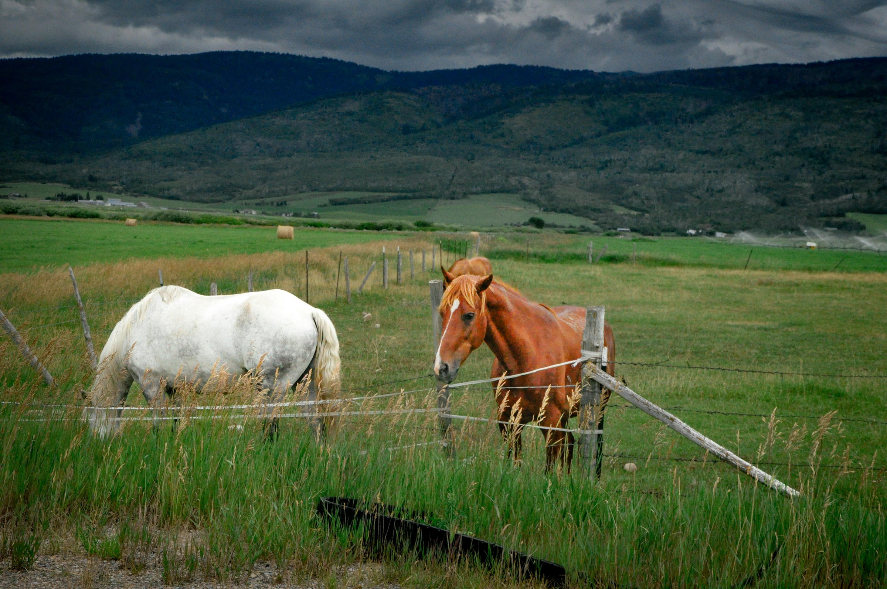
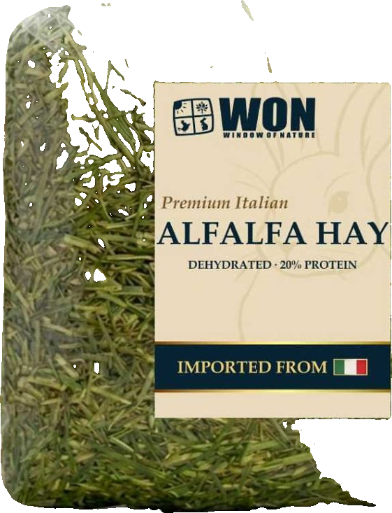
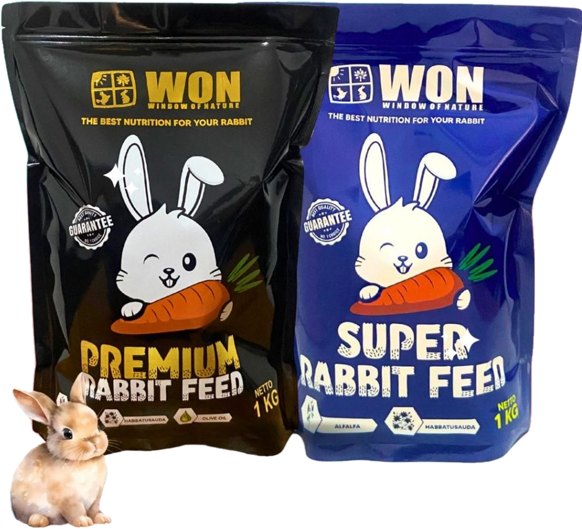
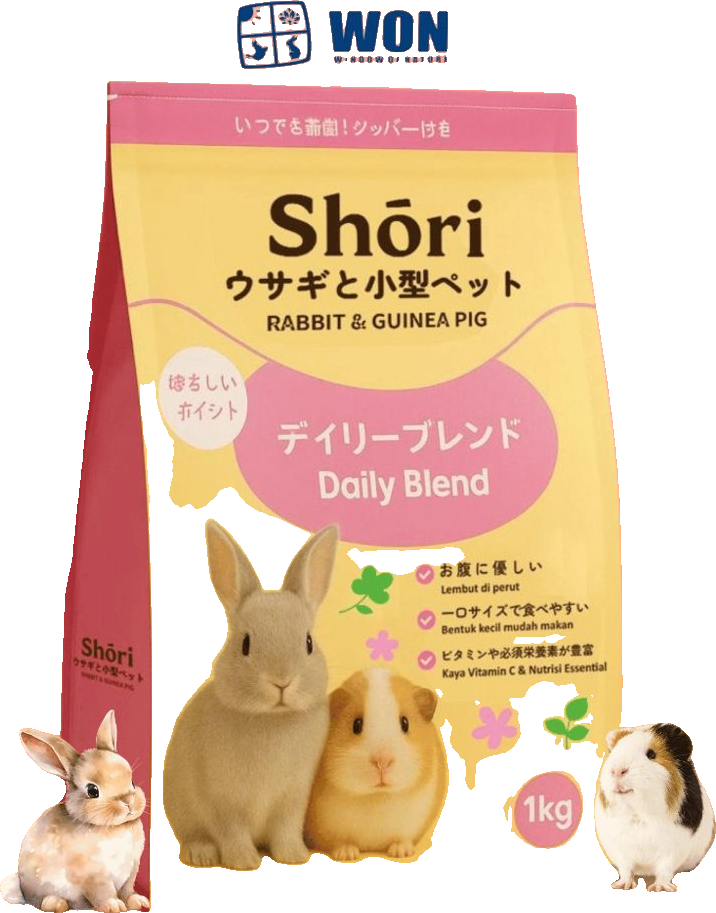
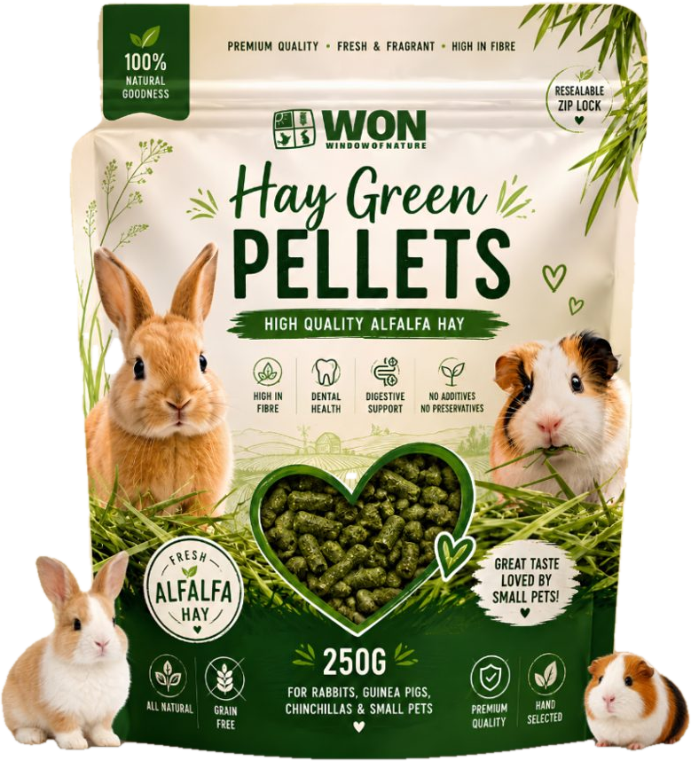
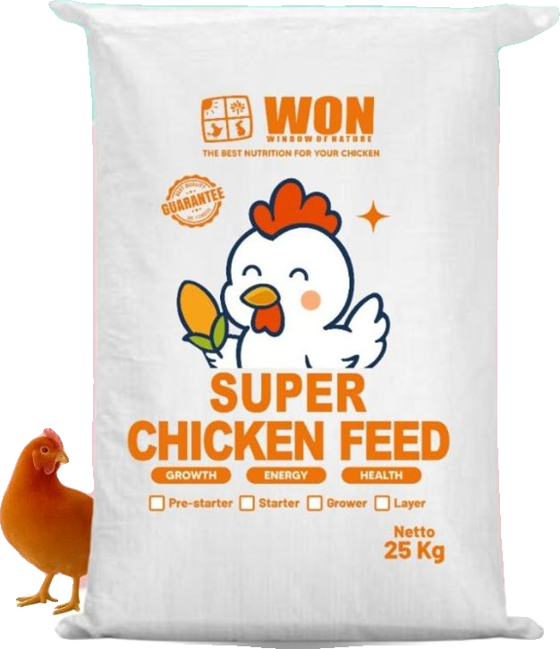
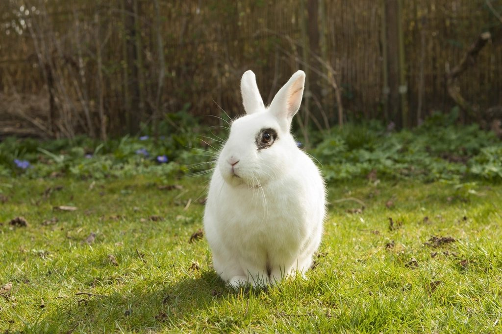

Know the product
Clear product types, net weights and formula details make choosing simpler.
From the smallest companions to the horses that move us. Thoughtful feed and Italian alfalfa for the animals in your care.


A dedicated collection for every kind of care. Explore the formula, the forage and the right pack.

Two alfalfa-based formulas. One thoughtful approach to rabbit feed.

A Japanese-inspired daily blend, with added vitamin C.
Selected forage, with a place in well-balanced feeding programmes.

Alfalfa in a practical 250 g resealable pouch.

Starter and layer feed, with sizes for a home flock or a farm.
Italian alfalfa deserves a place in the conversation about equine nutrition. We help equestrian businesses explore the right supply for their feeding programme, from pack selection to purchasing requirements.
Clear product types, net weights and formula details make choosing simpler.
A rabbit, a laying hen and a working horse have different needs. Our collections keep those differences in view.
From a single pouch to a business enquiry, speak directly with Window of Nature in Bandung.
Window of Nature brings our WON feed ranges, Shōri and imported Italian alfalfa together. One collection, created around the many ways we care for animals.

Find a product for your animals, or start a supply conversation for your business.